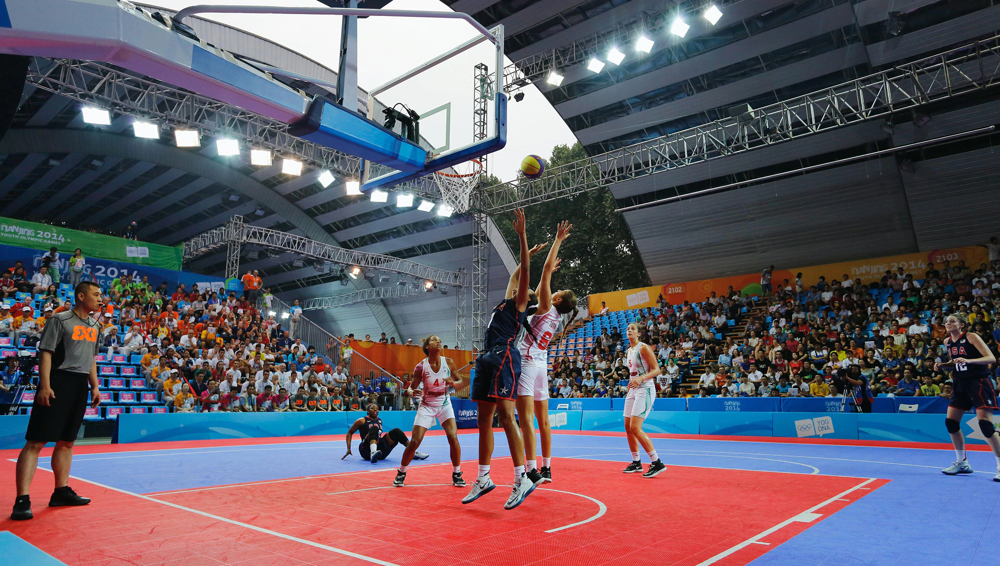
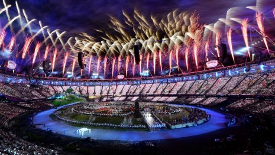

Olympic Games
- Ancient Olympics
- Modern Games
- Forerunners
- Revival
- 1896 Games
- 21st-century games
The modern Olympic Games or Olympics are leading international sporting events featuring summer and winter sports competitions in which thousands of athletes from around the world participate in a variety of competitions. The Olympic Games are considered the world's foremost sports competition with more than 200 nations participating. The Olympic Games are held every four years, with the Summer and Winter Games alternating by occurring every four years but two years apart.
Their creation was inspired by the ancient Olympic Games (Ancient Greek: Ὀλυμπιακοί Ἀγῶνες), which were held in Olympia, Greece, from the 8th century BC to the 4th century AD. Baron Pierre de Coubertin founded the International Olympic Committee (IOC) in 1894, leading to the first modern Games in Athens in 1896. The IOC is the governing body of the Olympic Movement, with the Olympic Charter defining its structure and authority.
The evolution of the Olympic Movement during the 20th and 21st centuries has resulted in several changes to the Olympic Games. Some of these adjustments include the creation of the Winter Olympic Games for snow and ice sports, the Paralympic Games for athletes with a disability, the Youth Olympic Games for athletes aged 14 to 18, the five Continental games (Pan American, African, Asian, European, and Pacific), and the World Games for sports that are not contested in the Olympic Games. The Deaflympics and Special Olympics are also endorsed by the IOC. The IOC has had to adapt to a variety of economic, political, and technological advancements. The abuse of amateur rules by the Eastern Bloc nations prompted the IOC to shift away from pure amateurism, as envisioned by Coubertin, to allowing participation of professional athletes. The growing importance of mass media created the issue of corporate sponsorship and commercialisation of the Games. World wars led to the cancellation of the 1916, 1940, and 1944 Games. Large boycotts during the Cold War limited participation in the 1980 and 1984 Games.
The Olympic Movement consists of international sports federations (IFs), National Olympic Committees (NOCs), and organising committees for each specific Olympic Games. As the decision-making body, the IOC is responsible for choosing the host city for each Games, and organises and funds the Games according to the Olympic Charter.  The IOC also determines the Olympic programme, consisting of the sports to be contested at the Games. There are several Olympic rituals and symbols, such as the Olympic flag and torch, as well as the opening and closing ceremonies. Over 13,000 athletes compete at the Summer and Winter Olympic Games in 33 different sports and nearly 400 events. The first, second, and third-place finishers in each event receive Olympic medals: gold, silver, and bronze, respectively.
The Games have grown so much that nearly every nation is now represented.
This growth has created numerous challenges and controversies, including boycotts, doping, bribery, and a terrorist attack in 1972. Every two years the Olympics and its media exposure provide athletes with the chance to attain national and sometimes international fame. The Games also constitute an opportunity for the host city and country to showcase themselves to the world.The Ancient Olympic Games were religious and athletic festivals held every four years at the sanctuary of Zeus in Olympia, Greece. Competition was among representatives of several city-states and kingdoms of Ancient Greece. These Games featured mainly athletic but also combat sports such as wrestling and the pankration, horse and chariot racing events. It has been widely written that during the Games, all conflicts among the participating city-states were postponed until the Games were finished. This cessation of hostilities was known as the Olympic peace or truce.This idea is a modern myth because the Greeks never suspended their wars. The truce did allow those religious pilgrims who were travelling to Olympia to pass through warring territories unmolested because they were protected by Zeus.The origin of the Olympics is shrouded in mystery and legend; one of the most popular myths identifies Heracles and his father Zeus as the progenitors of the Games.According to legend, it was Heracles who first called the Games "Olympic" and established the custom of holding them every four years. The myth continues that after Heracles completed his twelve labours, he built the Olympic Stadium as an honour to Zeus. Following its completion, he walked in a straight line for 200 steps and called this distance a "stadion" (Greek: στάδιον, Latin: stadium, "stage"), which later became a unit of distance. The most widely accepted inception date for the Ancient Olympics is 776 BC; this is based on inscriptions, found at Olympia, listing the winners of a footrace held every four years starting in 776 BC.The Ancient Games featured running events, a pentathlon (consisting of a jumping event, discus and javelin throws, a foot race, and wrestling), boxing, wrestling, pankration, and equestrian events.Tradition has it that Coroebus, a cook from the city of Elis, was the first Olympic champion.